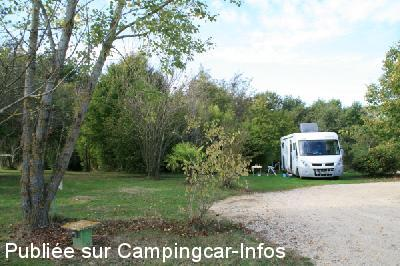
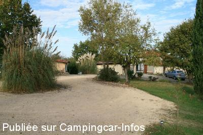
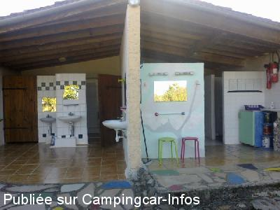

ACS = Aire de services sur camping acceptant le passage pour les services de :
LUNAX
(N° 264)
Accès/adresse :
Laron
Camping le Canard Fou **
31350 LUNAX
Camping le Canard Fou **
31350 LUNAX
Latitude : (Nord) 43.33145° Décimaux ou 43° 19′ 53′′
Longitude : (Est) 0.68051° Décimaux ou 0° 40′ 49′′
Tarif : 2015
Emplacement, C-C, électricité, Lave-linge, sèche-linge : 12 €
Services :


Autres informations :
Ouvert du 01/04 au 30/11
8 emplacements
Tél : +33(0) 561 882 606
http://www.tourismeboulonnais.com/a-lunax.p96.html

Le 09/02/2015 par PTH72

Le 09/02/2015 par PTH72

Le 09/02/2015 par PTH72
de
PTH72
le 09/02/2015 :
Nous y avons séjourné du 25 au 28 octobre 2014.
Un super mini camping tenu par un Allemand un peu fou (comme son canard) mais d'un accueil et d'une serviabilité hors du commun.
Et pour un prix dérisoire, tout est compris (machine à laver et sèche linge) !
Vraiment pour ceux qui aiment le calme et la gentillesse, à recommander.
Nous y avons séjourné du 25 au 28 octobre 2014.
Un super mini camping tenu par un Allemand un peu fou (comme son canard) mais d'un accueil et d'une serviabilité hors du commun.
Et pour un prix dérisoire, tout est compris (machine à laver et sèche linge) !
Vraiment pour ceux qui aiment le calme et la gentillesse, à recommander.
de
le 06/12/2001 :
Pour les amoureux du calme, de la pèche à 100 mètres, un petit camping avec 6 emplacements. Sanitaires au top, emplacement immense, 60 Francs électricité comprise. Le meilleur accueil que nous ayons connu en plus de 30 ans.
Pour les amoureux du calme, de la pèche à 100 mètres, un petit camping avec 6 emplacements. Sanitaires au top, emplacement immense, 60 Francs électricité comprise. Le meilleur accueil que nous ayons connu en plus de 30 ans.